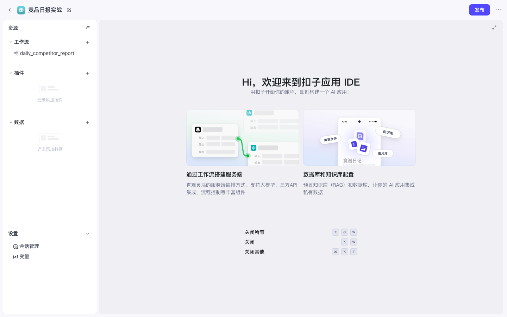
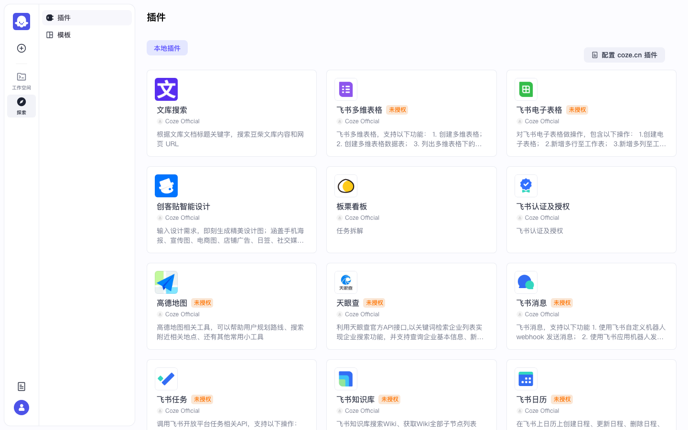
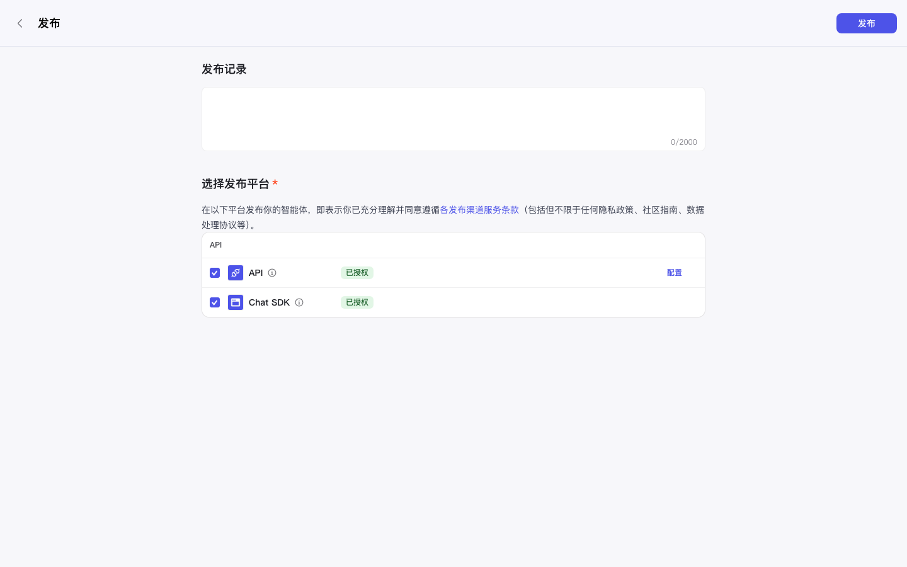
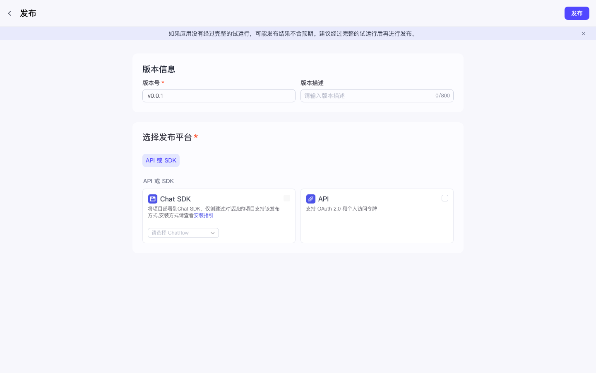

Coze 实战 · P09 / 共 10 课 · ≈30 min · 开源可用
P09 · Chatflow 与 Chat SDK 嵌入
上级：实战总目录。文件命名规范：coze-studio-practice-NN-slug.html。
0
前置
- □ 已完成 P08（会发布、会拿 PAT）更佳
- □ 有应用（P07）或能新建对话流
本课定位：Chatflow = 面向「人多轮对话」的工作流形态；Chat SDK = 把对话窗嵌到你自己的网站。批处理日报仍用普通 Workflow + cron。
1
先分清：Workflow vs Chatflow
| 普通工作流 Workflow | 对话流 Chatflow | |
|---|---|---|
| 入口 | API / 试运行 / cron | 对话 UI / Chat SDK |
| 交互 | 一次输入 → 跑完 | 多轮用户消息 |
| 典型 | 竞品日报推飞书（P01） | 客服问答、引导填表 |
2
创建对话流
- 打开应用 IDE（或资源库）
- 新建资源时选择 对话流 / Chatflow（有的版本在工作流创建里分子类型）
- 名称仍建议英文：
support_chatflow

图：应用 IDE — 可从资源栏新建对话流。

图：探索与开放能力相关入口（发布/SDK 文档常从产品内链出）。
3
编排最小可跑对话
最小链路：
开始（接收用户消息） → LLM（角色：简短客服） → 结束（回复用户）
LLM 提示词可复制：
你是竞品情报助理。用不超过 5 句中文回答用户问题。 若问题与交易所活动无关，礼貌说明你的职责范围。
✅ 在对话流调试面板能多轮问答，且每轮有回复。
4
发布到 Chat SDK 渠道
- 应用 / 智能体右上角 发布
- 渠道勾选 Chat SDK（开源通常还有 API；无微信/飞书机器人渠道）
- 发布成功后记录：
bot_id/ 应用 id、以及 P08 里的 PAT

图：发布渠道选择（实录）。

图：应用发布页。
5
嵌入自有 HTML（骨架）
说明：具体包名随开源 open-platform 版本变化；以下为嵌入思路骨架，把占位符换成你的值。
<!-- 伪代码 / 骨架：按你安装的 @coze/* Chat SDK 文档调整 --> <div id="coze-chat-root"></div> <script type="module"> // 1) 引入官方 Chat SDK // 2) 初始化时传入： // - bot_id / app_id // - token 或 PAT（勿把长期密钥写进公开前端；生产用后端换短票） // - user_id（开源常见必填，标识终端用户） // 3) mount 到 #coze-chat-root </script>
踩坑：前端裸奔长期 PAT任何访客都能刷你的额度。生产请用后端签发短期 token。
开源 Chat SDK 字段可能要求
user_id、conversation_id 等；以你当前版本的 open-platform 文档为准。6
验收清单
- □ 能说清 Workflow 与 Chatflow 的分工
- □ 至少创建并调试通一条对话流
- □ 发布渠道勾过 Chat SDK / API
- □ 知道嵌入需要 bot 标识 + 鉴权，且 PAT 不宜公开
全部完成 → 恭喜跑通开源实战主线，返回 实战总目录 复习任意一课。